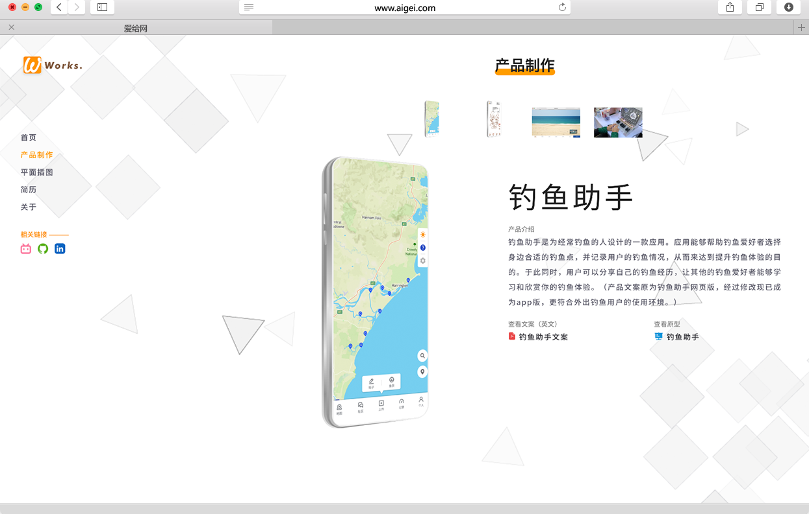
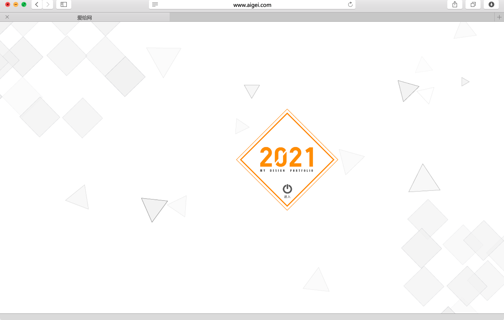
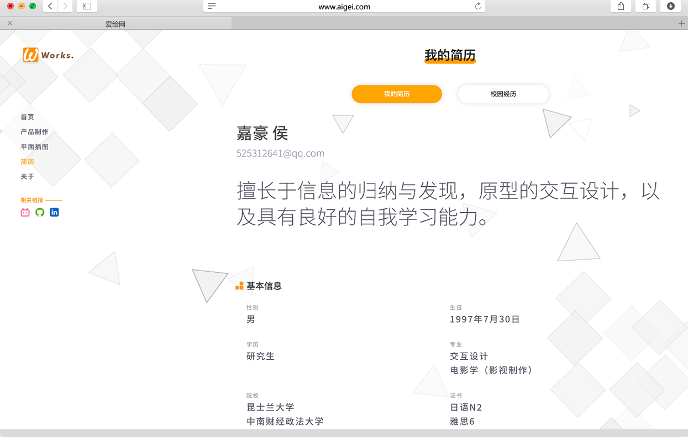

关于网页
-
LAYOUT
网站布局
网站采用原生代码搭建。网站整体布局偏简约现代的形式，采用了侧边导航布局，方便快速查看菜单内容。除此之外，网站主要内容集中在右侧，方便用户快速游览信息。
-
GRAPHIC
网站以橘色为主色调，彰显活力。除此之外，网站使用了抽象的灰色方块作为背景，为网站增加了一些现代的感觉。
网站UI
-
DYNAMIC
当用户进行鼠标操作，鼠标会发散出星星，以强调活力的特征。与此同时，网站在页面切换和滚动之间加入了过渡效果，切换更加顺滑。除此之外，网站还对部分图标进行了动画处理，进一步增加活力感。